Anna Gili
Born in Orvieto in 1960, she graduated from the I.S.I.A. in Florence. She took part in many exhibitions for young designers in Italy and abroad in particular at the Kaess-Weiss gallery in Stuttgart and the Alchimia Museum in Milan. She collaborates with Cassina, Cappellini, Frau. Anna Gili
ANNA GILI EXHIBITION FOR SALONE INTERNAZIONALE DEL MOBILE 2013
ELEPHANT PLANET by Anna Gili Permanent design sculpture-installation
A.B.C. Artbeat Collection
DONNE IN BOTTEGA in Milano
TRIENNALE DESIGN MUSEUM
MISIAD-TOTEM daily objects with hight simbolic and sculptural value
MILANO MAKERS in Cattedrale della fabbrica del vapore ,Milano
TRAMPOLIERE
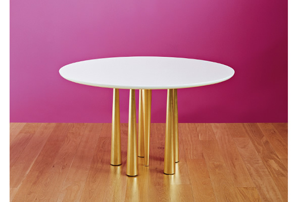the table is divided in two fondamental parts: fist the legs, a rotational surface made by a line and a cruve the axis; 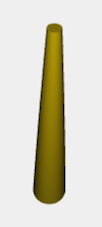 second the table surface made by the BEZIER(S0) and BEZIER(S2) function mapped on a 2D domain 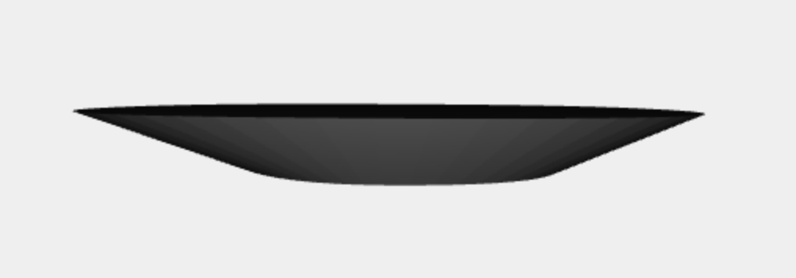 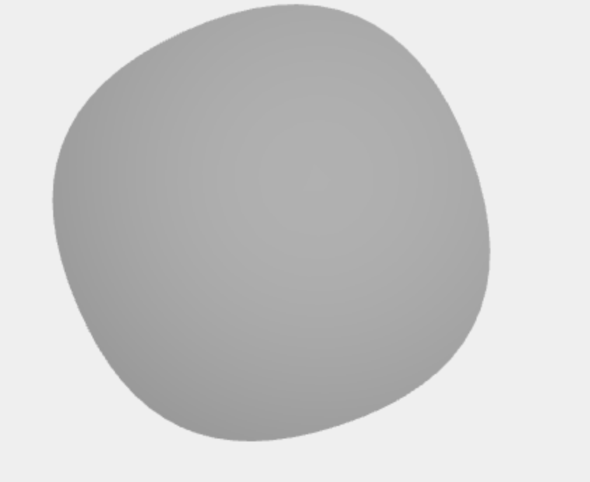
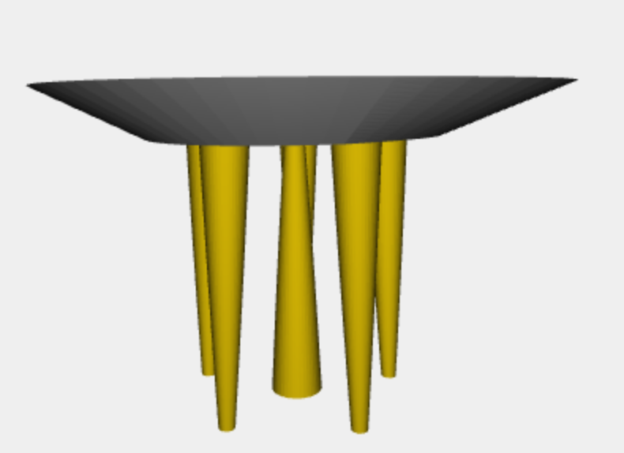 TRAMPOLIERE LUNGO 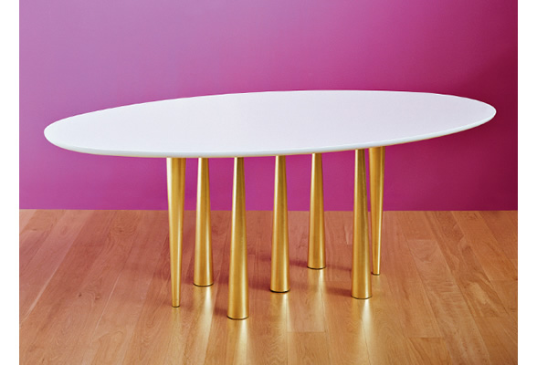a second version of the TRAMPOLIERE with a different table's surface and different trasformation on the legs 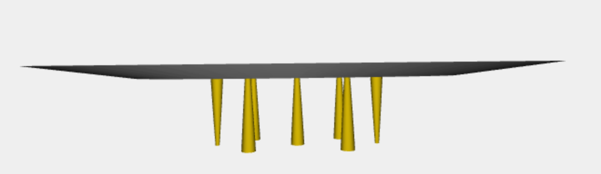
VISO APERTO 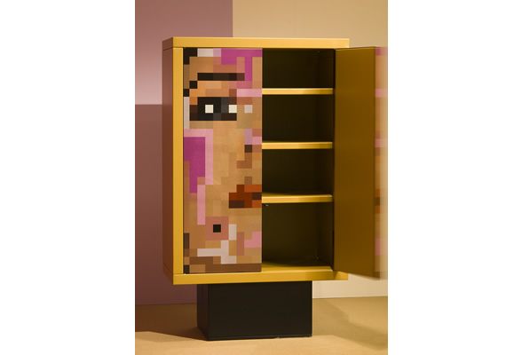This wardrobe is the the STRUCT of a central structure with 3 shelf and a black base
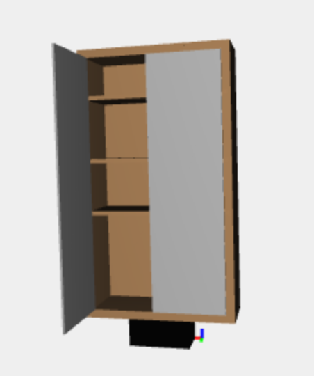 VASO IN VETRO-SALVATI 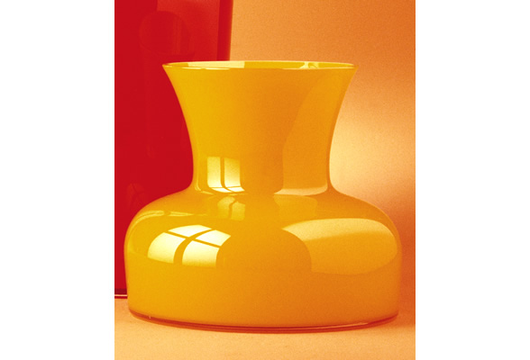the jar is composite by 2D curves adapted and rotated,used for generete the jar surface
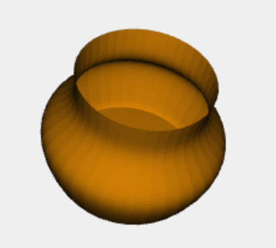 POLTRONA CAPPELLINI INTERNETIONAL 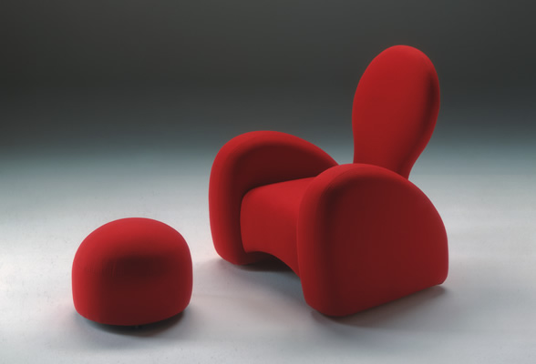the armchair is made by three parts: the headboard made by nubs and the BEZIER(S1) function
the pillow curved in all the 3 dimentions the back of the armchair developed for half and mirrored